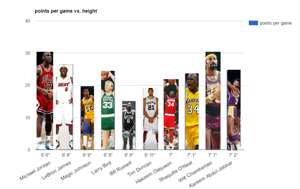
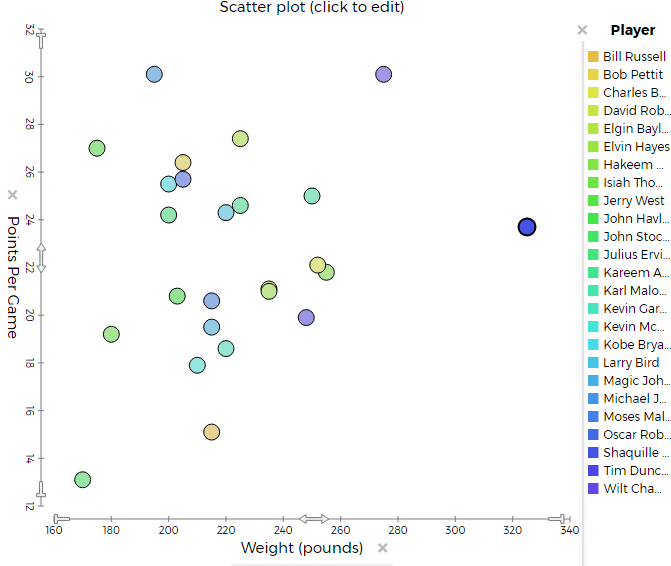

For collecting data we looked at the stats on Tuva Labs and other resources on Google. The stats we collected was hieght, wieght, name, rank, and points per game. Then we put the data together into graphs to analyze.

These graphs show how the players that are the tallest and the shortest score the greatest number of points per game. This may also be true because the positions that score the points, such as the forwards and the center, use the player’s heights to the team’s advantage. The somewhat heavier players also score the most points per game because they are able to push the other players around and use that to their advantage while playing.

This graph we took from tuva labs compare the ppg, height, and players. As you can see Wilt Chamberlain is really tall and has a high ppg. On the other hand Michael Jordan is a lot shorter but had the same ppg. There are many people taller than Michael Jordan but they don't have as many points. It is not super clear but the shorter players seem so have a higher ppg.
This is our creative graph.On the x-axis in shows the names of the players and their height. On the y-axis it shows the ppg of each player. It also shows a picture of the player as the bar. Outside source - the outside source for creative graph
Data Analysis: Weight does not affect the points per game that much but the players with 180-230 pounds seem to have the most points. There is one exception which is Wilt Chamberlain weighing at 280 pounds! But the “heavier people” such as Tim Duncan don't score as much because of the weight he carries when he jumps.
There is no perfect weight to be better at basketball. A lot of the time to be good you need to have good skills and your ppg is also different based on your position. Based on data it is good to be like above 6'5" and lower than 6'9" or above 7'5". It also help to be lighter because you are more agile and can jump higher.